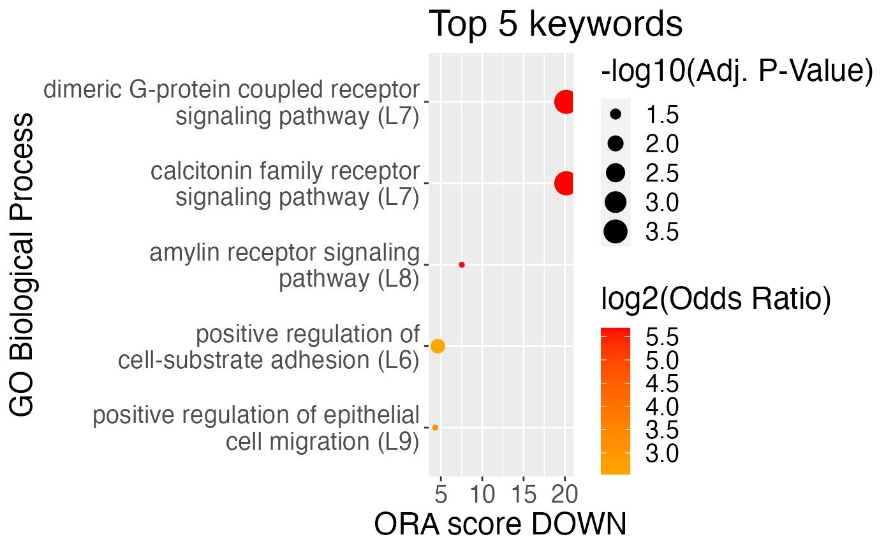

scDiffCom: Investigating changes in intercellular communication
Cyril Lagger, Eugen Ursu
scDiffCom-vignette.RmdWe show here how to use scDiffCom to investigate changes in intercellular communication from scRNA-seq data.
Standard Workflow
Setup a Seurat object
scDiffCom requires as input a Seurat object that must satisfy some conditions:
- Cells should have been previoulsy annotated with cell-types (such as explained for example here).
- The
meta.dataof theSeuratobject should contain a column that indicates to which of two groups each cell belongs to. Note that although the main aim ofscDiffComis to perform differential analysis, it is also possible to only perform a detection analysis (see below). - The slot
dataof theSeuratobject should contain standard log-normalize values.
For the purpose of this vignette, we use a dummy Seurat object available as part of scDiffCom. It corresponds to the liver scRNA-seq dataset from the Tabula Muris Senis. Note that after normalization and pre-processing, the object has been down-sampled (in both genes and cells) to keep it light. As such, all results below are not intended to convey any meaningful biology. For a real biological analysis using scDiffCom please see our scAgeCom analysis (article in prep.)
library(scDiffCom)
library(Seurat)
#> Attaching SeuratObject
seurat_object <- scDiffCom::seurat_sample_tms_liver
seurat_object
#> An object of class Seurat
#> 726 features across 468 samples within 1 assay
#> Active assay: RNA (726 features, 0 variable features)
# cell-type annotations are stored in "cell_type"
head(seurat_object$cell_type)
#> A16_B000767_B009945_S16.mm10-plus-4-0 A16_D045313_B009942_S16.mm10-plus-4-0
#> "T cell" "endothelial cell of hepatic sinusoid"
#> A21_B001247_B009941_S21.mm10-plus-4-0 A22_B001247_B009941_S22.mm10-plus-4-0
#> "B cell" "B cell"
#> A2_D045313_B009942_S2.mm10-plus-4-0 A5_B001247_B009941_S5.mm10-plus-4-0
#> "hepatocyte" "T cell"
# the grouping condition (here by age) is stored in "age_group"
head(seurat_object$age_group)
#> A16_B000767_B009945_S16.mm10-plus-4-0 A16_D045313_B009942_S16.mm10-plus-4-0
#> "OLD" "OLD"
#> A21_B001247_B009941_S21.mm10-plus-4-0 A22_B001247_B009941_S22.mm10-plus-4-0
#> "OLD" "OLD"
#> A2_D045313_B009942_S2.mm10-plus-4-0 A5_B001247_B009941_S5.mm10-plus-4-0
#> "OLD" "OLD"
table(seurat_object$age_group)
#>
#> OLD YOUNG
#> 250 218Database of ligand-receptor interactions
As in several other intercellular communication studies, scDiffCom infers cell type to cell type communication patterns based on the gene expression of ligands and receptors known to interact. The package provides both a human database and a mouse database of ligand-receptor interactions (LRIs) that have been retrieved and processed from eight public resources.
As shown below, scDiffCom uses these databases internally and the user do not need to call them explicitly to perform any interaction analysis. They are nevertheless accessible directly from the package.
# Loading the mouse LRIs
data(LRI_mouse)
# actual data.table with the interactions
head(LRI_mouse$LRI_curated[, 1:7])
#> LRI LIGAND_1 LIGAND_2 RECEPTOR_1 RECEPTOR_2 RECEPTOR_3
#> 1: 1700013F07Rik:Plscr4 1700013F07Rik <NA> Plscr4 <NA> <NA>
#> 2: 2300002M23Rik:Ddr1 2300002M23Rik <NA> Ddr1 <NA> <NA>
#> 3: 9530003J23Rik:Itgal 9530003J23Rik <NA> Itgal <NA> <NA>
#> 4: A2m:Lrp1 A2m <NA> Lrp1 <NA> <NA>
#> 5: Aanat:Mtnr1a Aanat <NA> Mtnr1a <NA> <NA>
#> 6: Aanat:Mtnr1b Aanat <NA> Mtnr1b <NA> <NA>
#> DATABASE
#> 1: scTensor;SingleCellSignalR
#> 2: scTensor;SingleCellSignalR
#> 3: scTensor;SingleCellSignalR
#> 4: connectomeDB2020;NicheNet;scTensor;SingleCellSignalR
#> 5: connectomeDB2020;NicheNet;scTensor;SingleCellSignalR
#> 6: connectomeDB2020;NicheNet;scTensor;SingleCellSignalR
# GO term annotation
head(LRI_mouse$LRI_curated_GO)
#> LRI GO_ID GO_NAME ASPECT LEVEL
#> 1: 1700013F07Rik:Plscr4 GO:0005575 cellular_component cellular_component 1
#> 2: 1700013F07Rik:Plscr4 GO:0044464 cell part cellular_component 2
#> 3: 1700013F07Rik:Plscr4 GO:0003674 molecular_function molecular_function 1
#> 4: 1700013F07Rik:Plscr4 GO:0005488 binding molecular_function 2
#> 5: 1700013F07Rik:Plscr4 GO:0008150 biological_process biological_process 1
#> 6: 2300002M23Rik:Ddr1 GO:0003674 molecular_function molecular_function 1
# KEGG Pathway annotation
head(LRI_mouse$LRI_curated_KEGG)
#> LRI KEGG_ID KEGG_NAME
#> 1: Apoa1:Abca1 path:mmu04975 Fat digestion and absorption
#> 2: Apoa1:Abca1 path:mmu04979 Cholesterol metabolism
#> 3: Apoa1:Abca1 path:mmu05417 Lipid and atherosclerosis
#> 4: Apoe:Abca1 path:mmu04979 Cholesterol metabolism
#> 5: Calm1:Abca1 path:mmu05417 Lipid and atherosclerosis
#> 6: Calm2:Abca1 path:mmu05417 Lipid and atherosclerosisRun a standard differential analysis
All differential intercellular communication results can be obtained from a single call to the function run_interaction_analysis. For a more advanced usage and control of all parameters, please see the relevant section below and look at ?run_interation_analysis.
In standard mode, it will perform the following steps:
- Preprocess the data and meta.data of the Seurat object.
- Build a table of all potential cell-cell interactions (CCIs) of the form (Emitter Cell Type, Receiver Cell Type, Ligand Gene(s), Receptor Gene(s)). They are obtained by comparing the genes in the Seurat object to those of our internal database of LRIs.
- Compute scores, detection rates,… for each CCI.
- Perform two different permutation tests to infer both the specificity (as originally defined by CellPhoneDB) and significance of change of each CCI.
- Based on their computed attributes, CCIs are either filtered out or assigned to a regulation category: UP, DOWN, FLAT, NSC (non-significant change).
- Perform an over-representation analysis to infer dominant communication changes at the level of various categories (LRI, cell types, GO Terms, KEGG pathways,…).
By default run_interaction_analysis performs 1000 iterations for the permutation tests. In such as case, the analysis should only take a couple of minutes when run sequentially on the Seurat object considered here. For a real scenario with a bigger object and potentially more iterations (e.g. 10’0000), we recommend to run the analysis in parallel by loading the future package and setting the plan.
# access future options
library(future)
plan(sequential) # sequentially and in the current R process
#plan(multisession, workers = 4) # background R sessions
#plan(multicore, workers = 4) # forked R processes, not Windows/not RStudio
# run the interaction analysis between young and old cells with
# default parameters
aging_example <- run_interaction_analysis(
seurat_object = seurat_object,
LRI_species = "mouse",
seurat_celltype_id = "cell_type",
seurat_condition_id = list(
column_name = "age_group",
cond1_name = "YOUNG",
cond2_name = "OLD"
)
)
#> Extracting data from assay 'RNA' and slot 'data' (assuming normalized log1p-transformed data).
#> Converting normalized data from log1p-transformed to non-log1p-transformed.
#> Input data: 726 genes, 468 cells and 5 cell-types.
#> Input ligand-receptor database: 4990 mouse interactions.
#> Number of LRIs that match to genes present in the dataset: 1331.
#> Type of analysis to be performed: differential analysis between YOUNG and OLD cells.
#> Total number of potential cell-cell interactions (CCIs): 33275 (5 * 5 * 1331).
#> Performing permutation analysis (1000 iterations by batches of 1000) on 10957 potential CCIs.
#> Performing batch 1 of 1.
#> Filtering and cleaning 'raw' CCIs.
#> Returning 2305 detected CCIs.
#> Performing over-representation analysis on the categories: LRI, LIGAND_COMPLEX, RECEPTOR_COMPLEX, ER_CELLTYPES, EMITTER_CELLTYPE, RECEIVER_CELLTYPE, GO_TERMS, KEGG_PWS.
#> Successfully returning final scDiffCom object.Explore the results
The output of run_interaction_analysis is an S4 object of class scDiffCom. We recommend to access the slot of the object by using the provided accessors
aging_example
#> An object of class scDiffCom with name scDiffCom_object
#> Analysis performed: differential analysis between YOUNG and OLD cells
#> 2305 detected CCIs across 5 cell types
#> Over-representation results for LRI, LIGAND_COMPLEX, RECEPTOR_COMPLEX, ER_CELLTYPES, EMITTER_CELLTYPE, RECEIVER_CELLTYPE, GO_TERMS, KEGG_PWS
# retrieving the list of parameters used to perform the analysis
head(GetParameters(aging_example), 4)
#> $object_name
#> [1] "scDiffCom_object"
#>
#> $LRI_species
#> [1] "mouse"
#>
#> $seurat_celltype_id
#> [1] "cell_type"
#>
#> $seurat_condition_id
#> $seurat_condition_id$column_name
#> [1] "age_group"
#>
#> $seurat_condition_id$cond1_name
#> [1] "YOUNG"
#>
#> $seurat_condition_id$cond2_name
#> [1] "OLD"The main results are stored as a data.table (one row per detected CCI) in the slot cci_table_detected. Each CCI is annotated with several attributes including logFC, adjusted p-values, final regulation assignment, etc.
CCI_detected <- GetTableCCI(aging_example, "detected", simplified = TRUE)
table(CCI_detected$REGULATION)
#>
#> DOWN FLAT NSC UP
#> 132 1143 994 36
top10_up_regulated <- CCI_detected[REGULATION == "UP"][order(-LOGFC)][1:10]
top10_up_regulated$CCI
#> [1] "myeloid leukocyte_myeloid leukocyte_Alox5:Alox5ap"
#> [2] "B cell_T cell_H2-Q6:Cd8b1"
#> [3] "myeloid leukocyte_T cell_Crlf2:Il7r_Crlf2"
#> [4] "endothelial cell of hepatic sinusoid_T cell_H2-T22:Cd8b1"
#> [5] "B cell_T cell_H2-M3:Cd8b1"
#> [6] "B cell_T cell_H2-D1:Cd8b1"
#> [7] "B cell_T cell_H2-K1:Cd8b1"
#> [8] "hepatocyte_T cell_H2-Q10:Cd8b1"
#> [9] "B cell_T cell_H2-Q6:Cd8a"
#> [10] "T cell_myeloid leukocyte_Ltb:Tnfrsf1a"
top10_down_regulated <- CCI_detected[REGULATION == "DOWN"][order(LOGFC)][1:10]
top10_down_regulated$CCI
#> [1] "B cell_endothelial cell of hepatic sinusoid_Gcg:Ramp2"
#> [2] "B cell_endothelial cell of hepatic sinusoid_Iapp:Calcrl"
#> [3] "B cell_endothelial cell of hepatic sinusoid_Iapp:Ramp2"
#> [4] "B cell_endothelial cell of hepatic sinusoid_Ins2:Insr"
#> [5] "B cell_endothelial cell of hepatic sinusoid_Pyy:Dpp4"
#> [6] "B cell_hepatocyte_Iapp:Ide"
#> [7] "B cell_hepatocyte_Ins2:Ide"
#> [8] "B cell_myeloid leukocyte_Ptpn6:Fcrls"
#> [9] "T cell_T cell_Lamc1:Itgb1_Itga2"
#> [10] "T cell_endothelial cell of hepatic sinusoid_Lamc1:Itga1_Itgb1"Results from the over-representation analysis allows us to find dominant changing patterns. This can be accessed from the slot and the top terms can be visualized on a plot.
# retrieve ORA results for all categories
ORA_tables <- GetTableORA(aging_example, "all", simplified = TRUE)
# investigate the up-regulated LRIs
OR_LRI_up <- ORA_tables$LRI[OR_UP > 1 & BH_P_VALUE_UP <= 0.01]$VALUE
OR_LRI_up
#> [1] "B2m:Cd3g" "H2-D1:Cd8a" "H2-D1:Cd8b1" "H2-K1:Cd8a"
#> [5] "H2-K1:Cd8b1" "H2-Q6:Cd8b1" "H2-T22:Cd8b1" "H2-T23:Cd8b1"
#> [9] "Lgals1:Lgals1" "Ltb:Tnfrsf1a"
PlotORA(
object = aging_example,
category = "LRI",
regulation = "UP"
)
# investigate the down-regulated GO-terms
OR_GO_down <- ORA_tables$GO_TERMS[OR_UP > 1 & BH_P_VALUE_UP <= 0.01]$VALUE
head(OR_GO_down)
#> [1] "cellular glucose homeostasis"
#> [2] "B cell activation involved in immune response"
#> [3] "mature B cell differentiation involved in immune response"
#> [4] "plasma cell differentiation"
#> [5] "mature B cell differentiation"
#> [6] "immune system process"
PlotORA(
object = aging_example,
category = "GO_TERMS",
regulation = "DOWN",
GO_aspect = "biological_process"
)
The over-representation performed on emitter and receiver cell types allows us to build an interactive network of the dominant changes in the dataset.
BuildNetwork(
object = aging_example,
network_type = "ORA_network",
layout_type = "bipartite"
)Advanced functionalities
Modifying filtering parameters
aging_example_strong_logfc <- FilterCCI(
object = aging_example,
new_threshold_logfc = log(2)
)
#> Filtering and cleaning 'raw' CCIs.
#> Returning 2305 detected CCIs.
#> Performing over-representation analysis on the categories: LRI, LIGAND_COMPLEX, RECEPTOR_COMPLEX, ER_CELLTYPES, EMITTER_CELLTYPE, RECEIVER_CELLTYPE, GO_TERMS, KEGG_PWS.
#> Erasing all previous ORA results: LRI, LIGAND_COMPLEX, RECEPTOR_COMPLEX, ER_CELLTYPES, EMITTER_CELLTYPE, RECEIVER_CELLTYPE, GO_TERMS, KEGG_PWS.Performing ORA on a custom category
library(data.table)
cell_types <- c(
"B cell",
"T cell",
"endothelial cell of hepatic sinusoid",
"hepatocyte",
"myeloid leukocyte"
)
cell_families <- c(
"leukocyte",
"leukocyte",
"endothelial cell",
"epithelial cell",
"leukocyte"
)
cell_families_dt <- data.table(
EMITTER_CELLTYPE = cell_types,
EMITTER_CELLFAMILY = cell_families
)
RunORA(
object = aging_example,
categories = c("LRI"),
extra_annotations = list(
cell_families_dt
),
overwrite = TRUE
)
#> Performing over-representation analysis on the categories: LRI, EMITTER_CELLFAMILY.
#> Erasing all previous ORA results: LRI, LIGAND_COMPLEX, RECEPTOR_COMPLEX, ER_CELLTYPES, EMITTER_CELLTYPE, RECEIVER_CELLTYPE, GO_TERMS, KEGG_PWS.
#> An object of class scDiffCom with name scDiffCom_object
#> Analysis performed: differential analysis between YOUNG and OLD cells
#> 2305 detected CCIs across 5 cell types
#> Over-representation results for LRI, EMITTER_CELLFAMILYRunning a detection analysis without differential analysis
detection_example <- run_interaction_analysis(
seurat_object = seurat_object,
LRI_species = "mouse",
seurat_celltype_id = "cell_type",
seurat_condition_id = NULL,
iterations = 100
)
#> Extracting data from assay 'RNA' and slot 'data' (assuming normalized log1p-transformed data).
#> Converting normalized data from log1p-transformed to non-log1p-transformed.
#> Input data: 726 genes, 468 cells and 5 cell-types.
#> Input ligand-receptor database: 4990 mouse interactions.
#> Number of LRIs that match to genes present in the dataset: 1331.
#> Type of analysis to be performed: detection analysis without conditions.
#> Total number of potential cell-cell interactions (CCIs): 33275 (5 * 5 * 1331).
#> Performing permutation analysis (100 iterations by batches of 1000) on 8950 potential CCIs.
#> Performing batch 1 of 1.
#> Filtering and cleaning 'raw' CCIs.
#> Returning 8950 detected CCIs.
#> No over-representation analysis available for the selected parameters.
#> Successfully returning final scDiffCom object.